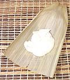
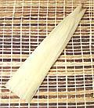
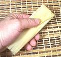
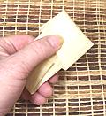
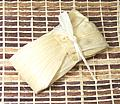

6
1
2
1/2
2
1/2
|
oz
#
t
#
c
t
|
Corn Husks (1)
Masa (2)
Salt
Lard (3)
Chicken Broth
Baking Powder





|
How much filling you can use depends on the dimensions of each corn
husk. Completed tamales will probably weigh between 1-1/8 ounces and
1-7/8 ounces. You should get about 36 tamales with a coarse masa, over
40 if it's quite fine (it absorbs more broth).
- Start the CORN HUSKS soaking in hot water. They need to soak
for several hours before use. Drain them well and wipe off any free
water with a towel before filling. Keep in mind these dry very quickly
so keep them moist.
- All dough ingredients must be at a cool room temperature because the
lard must not melt during beating. If necessary refrigerate to cool
and then continue beating.
- Measure out 1 pound of MASA and mix in the Salt.
- Beat Lard in a mixer for about 5 minutes to incorporate
air, then start adding Masa and Chicken Broth
alternately. If your Masa is fine you'll need more broth than listed
in the recipe. The dough should be soft and spoonable but not runny or
crumbly.
- When all masa and broth are in, continue beating for another 3
minutes or so. Test by setting a small piece of dough on the surface
of a bowl of water. If it sinks, continue beating until it floats.
If it just won't float see Note-4.
- Beat in the Baking Powder.
- Tear a few of your longest husks lengthwise into tie strips.
- Fill, wrap and tie:
- Lay out a Corn Husk and wipe off any free water. Place
a lump of Dough about 3/4 inch thick, leaving about 1-1/2
inches at the wide end and 3 inches at the pointy end.
- Wrap lengthwise as shown taking care that the wide end isn't
too wide.
- Fold down the pointy end and crease the fold with thumb and
forefinger so it stays put
- With thumb and forefinger held crosswise squeeze the filling down
from the wide end and fold it over the tip of the pointy end. Make
sure the wide end completely covers the opening at the pointy end
because it has to act as a roof to prevent water from dripping in.
- Hold the wide end down as shown and with your other hand wrap a
strand of husk around it, then use both hands to tie.
- Arrange in a steamer. Place tamales vertically with the wide end
flap at the top to prevent entry of water. They should be firmly
packed but not jammed as they will expand somewhat. Cover with spare
corn husks set like roof shingles to keep water from dripping back
into the tamales.
- Fill the bottom of the steamer with water and toss in a quarter. This
coin will tell you if there's a problem (it'll stop rattling or rattle
too fiercely).
- Bring the water to a boil, then place the top part of the steamer
with the tamales in it on the bottom. Keep the water bubbling well but
not boiling fiercely. Listen to the coin, it should rattle for a second
or so followed by a second of silence, then rattle again. If it rattles
continuously the heat is too high or you are nearly out of water. If
it stops rattling the heat is too low or you are out of water - neither
condition should be allowed.
- Start more water simmering to renew the steamer water when needed.
- Steam for about 2-3/4 hours, then test. Pull a tamale and place it
on the counter for a couple minutes to steam off and drop a few
degrees. The dough should then be firm and the husk should peel off
cleanly. If that passes, cut one in half and inspect the center.
- Serve warm. Once made, they can be kept refrigerated up to a week
and reheated in a pan, on a griddle or in the oven. They can be frozen
for longer storage and put directly from the freezer into a 350°F
oven for 30 minutes.
|